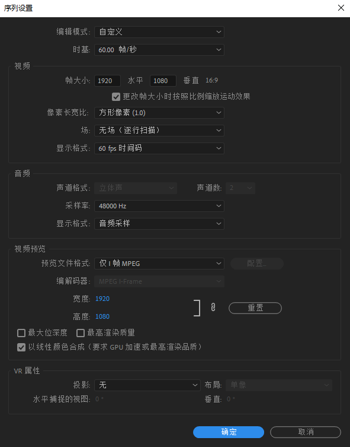
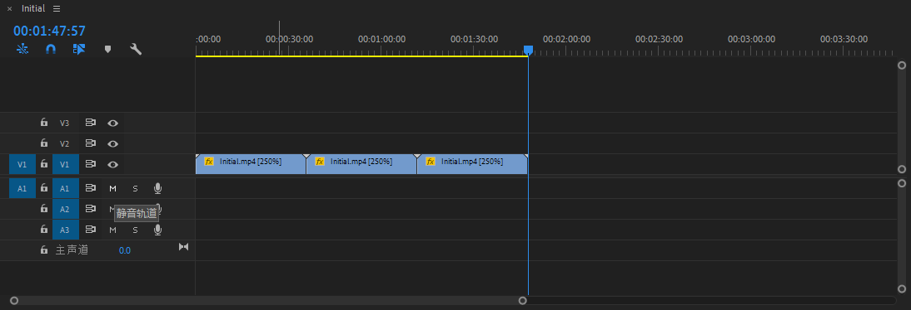
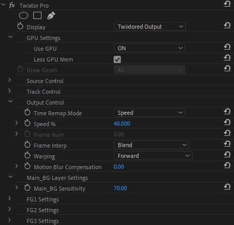

准备
所需工具
- Adobe Premiere Pro
- Twixtor Pro
对 Matroska 格式的素材进行拆轨
一来就踩了个坑，导入不了素材。
搜索后得知，Premiere Pro 不接受 Matroska 格式的素材，我们需要先将其中的音视频轨道拆出来。这里我使用 FFmpeg 进行拆分：
1 | 分离视频轨道 |
得到的文件就能导入了。
补帧
常见的补帧方法有光流法和 Twixtor 补帧。由于光流法效果略差，我这里使用后者。
首先当然是打开 Pr 新建项目，然后将素材拖入轨道并修改序列设置：

之后，通过键盘方向键导航，观察画面变化间隔的帧数。
右键序列中刚导入的素材，点击 「取消链接」 并删除音频轨道。然后选择右键菜单中的 「速度/持续时间…」，将速度改为 250%（假设画面 2-3 帧变化一次），这将起到消除重复帧的作用。由于速度变为了原来的 2.5 倍，需要将原素材选中，复制粘贴两次，起占位作用。
此时，轨道应该是这个样子的：

然后选中刚刚复制的这些轨道，右键，点击 「嵌套…」。添加嵌套之后不要切换到嵌套序列，直接将 「效果」 窗口中的 「Twixtor Pro」 拖至视频轨道上。
之后对其进行以下设置：
- 在 「Output Control」 中将速度调整为 40%（取决于上文调整的速度，上文加的速这里降回来）
- 将 「GPU Settings」 里的 「Use GPU」 勾选（显卡加速）
- 把 「Output Control」 中的 「Warping」 设置为 「Forward」（降低重影）
- （可选）调整 「Main_BG Layer Settings」 中的 「Main_BG Sensitive」（值越大画面越滑，但果冻效应也会更强）
如图：

然后将音频轨道加回来，并删除视频多出来的部分（如果有）。
之后按下回车键渲染一下。喝杯茶之后回来看看效果，没问题的话就可以导出了。
最终效果
本文发表于 Akarin's Story。
采用「署名 4.0 国际」知识共享许可协议进行许可，转载请注明出处。